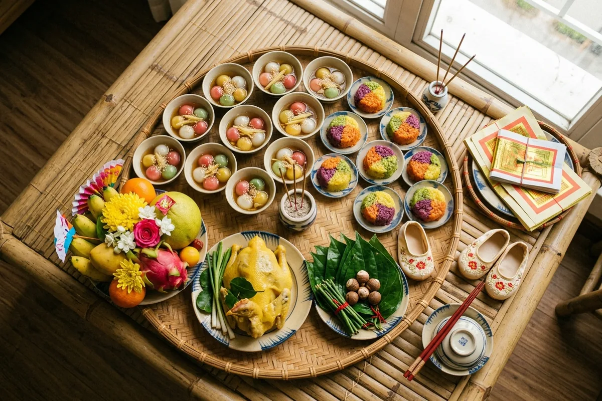
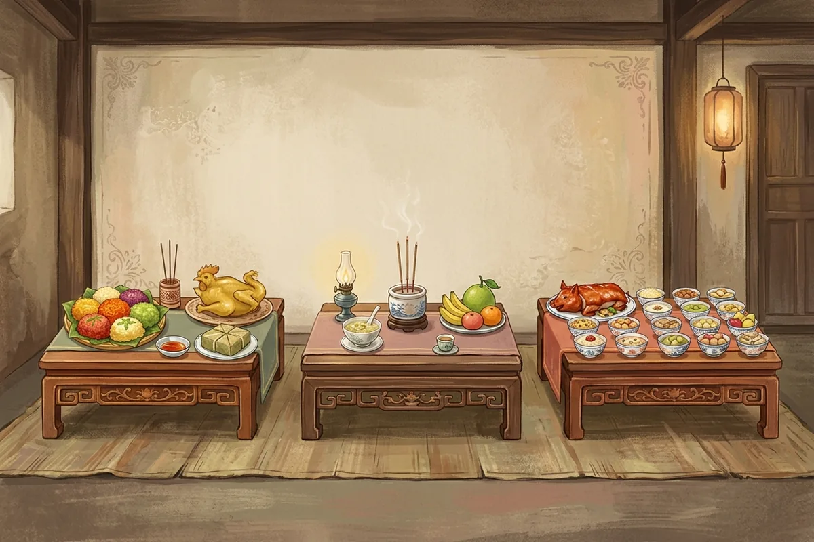

Cúng đầy tháng cho bé là lễ cúng Mụ khi bé tròn một tháng, để tạ ơn 12 Bà Mụ cùng Đức Ông và báo với gia tiên rằng nhà có thêm người. Lễ gồm 2–3 mâm: mâm Bà Mụ – Đức Ông, mâm cỗ cúng gia tiên, và có nơi thêm mâm Thổ Địa – Thần Tài. Ngày cúng phần lớn tính theo âm lịch, rồi lùi hoặc trồi 1–2 ngày tuỳ bé trai hay bé gái — mỗi gia đình, mỗi vùng tính một kiểu. Dưới đây đi lần lượt: chọn ngày, sắm lễ, bày mâm, đọc khấn, rồi tới chuyện mời khách.
- Thôi nôi khác đầy tháng thế nào — các lễ cúng Mụ trong năm đầu của bé
- Lời mời đầy tháng cho bé — câu mẫu nhắn Zalo và ghi lên thiệp
- Thiệp mời đầy tháng online — có ảnh bé, bản đồ, khách bấm xác nhận
Cúng đầy tháng là gì và cúng những ai?
Cúng đầy tháng là một trong các lễ cúng Mụ sau sinh, làm khi bé tròn một tháng, để tạ ơn 12 Bà Mụ đã nặn hình hài, giữ bé, và báo với tổ tiên rằng nhà có thêm người.
Ghi chép cũ nhất bạn có thể tự đọc là sách Việt Nam phong tục – Phan Kế Bính (1915), chương “Cha mẹ với con”. Sách dẫn lời Lê Quý Đôn: đẻ con được 3 ngày thì làm cỗ cúng mụ; đến hôm đầy tháng, hôm 100 ngày, hôm đầy tuổi tôi đều làm cỗ cúng gia tiên, bày tiệc mừng. Riêng Hà Nội thời đó, cùng sách ghi, người ta cúng mụ vào ba dịp: đầy cữ, đầy tháng và đầy tuổi tôi. Gần đây hơn, nhà nhân học Helle Rydstrøm (sách Embodying Morality, 2003) ghi nhận ở một làng nông thôn miền Bắc, lễ cho Mười Hai Bà Mụ được làm đúng lúc bé tròn một tháng. Vậy đầy tháng là mốc cúng Mụ có mặt ở cả ghi chép xưa lẫn nghiên cứu mới.
12 Bà Mụ là ai?
Bà Mụ là nhóm tiên nương trong tín ngưỡng dân gian, phò tá các nữ thần bảo hộ sinh nở. Chữ “bà mụ” vốn là cách gọi người đỡ đẻ; về sau mới dùng để chỉ các vị tiên nương lo việc thai sản. Bài Thập Nhị Hoa Nương trên Wikipedia tiếng Việt liệt kê 12 vị, mỗi vị một việc: thụ thai, giữ thai, nặn hình hài, chuyển dạ, ở cữ, chăm trẻ sơ sinh, ẵm bồng, trông trẻ. Ở Nam Bộ còn có cách hiểu khác: 12 Bà Mụ thay phiên nhau lo thai sản trong 12 năm, ứng với 12 con giáp. Muốn tận mắt thấy tượng 12 Bà Mụ, bạn ghé hậu điện Hội quán Phước Kiến ở Hội An hoặc Điện Ngọc Hoàng ở TP.HCM, theo cùng nguồn.
Đức Ông là ai, vì sao cúng cùng Bà Mụ?
Các tài liệu dân gian không thống nhất về Đức Ông. VOH (2018) gọi mâm chính là mâm “12 Bà Mụ – Đức Ông” và nhắc thêm lễ cho “Đức Ông và 3 Đức Thầy”. Bài “Lễ cúng Mụ” trên Mytour lại ghi một phần lễ riêng kính “3 ông Đức”. Hoatieu thì nói tới 12 Bà Mụ và 1 Bà Mụ Chúa, không nhắc Đức Ông; bài Bà Mụ trên Wikipedia cũng không. Tóm lại, cách phổ biến trong các bài hướng dẫn là khấn một Đức Ông; có nơi khấn ba ông Đức, có nơi thêm các Đức Thầy. Nhà bạn khấn mấy vị, hỏi người đã cúng đầy tháng cho anh chị em của bé.
4 mốc cúng Mụ trong năm đầu
| Mốc | Khi nào | Nguồn ghi nhận |
|---|---|---|
| Đầy cữ | 3 ngày sau sinh | Lê Quý Đôn, dẫn trong Phan Kế Bính (1915); Wikipedia “Bà Mụ” |
| Đầy tháng | Tròn 1 tháng (âm lịch) | Phan Kế Bính (1915); Rydstrøm (2003) |
| 100 ngày | Tròn 100 ngày | Phan Kế Bính gọi là “hôm 100 ngày”; Wikipedia “Bà Mụ” gọi mốc này là “đầy tuổi tôi” |
| Thôi nôi (đầy năm) | Tròn 1 năm | Wikipedia “Thôi nôi”; Phan Kế Bính gọi là “đầy tuổi tôi” |
Để ý dòng thứ ba và thứ tư: cùng chữ “đầy tuổi tôi”, Wikipedia dùng cho mốc 100 ngày, còn Phan Kế Bính tách “100 ngày” và “đầy tuổi tôi” thành hai dịp. Khi bà nói “đầy tuổi tôi”, hỏi lại bà đang nói mốc nào. Mốc cuối cùng — lễ thôi nôi khi bé tròn 1 tuổi — là lễ lớn nhất trong bốn mốc và có bài riêng.
Đầy tháng = lễ cúng Mụ thứ hai sau đầy cữ. Cúng 12 Bà Mụ, Đức Ông (số vị tuỳ nơi) và báo gia tiên.
Cúng đầy tháng vào ngày nào, tính âm hay dương lịch?
Phần lớn tài liệu tính theo ngày sinh âm lịch của bé, rồi lùi hoặc trồi 1–2 ngày tuỳ bé trai hay bé gái. Quy ước này khác nhau giữa các gia đình và vùng, vì vậy hỏi ông bà trước khi chốt ngày cúng đầy tháng.
Lý do người đọc rối: các trang đang đứng đầu Google mâu thuẫn nhau mà không ai nói đó là khác biệt theo nếp nhà. Thậm chí cùng tên gọi “nam trồi nữ sụt”, hai bài trên cùng một trang cộng đồng cho hai con số khác nhau.
Các cách tính đang tồn tại
| Cách tính | Bé trai | Bé gái | Nguồn ghi nhận |
|---|---|---|---|
| “Gái lùi hai, trai lùi một” | Lùi 1 ngày | Lùi 2 ngày | VOH (2018); Mytour (09/2026); một bài cộng đồng Hello Bacsi ghi cách này phổ biến ở miền Nam |
| “Nam trồi, nữ sụt” | Trồi 1 ngày | Sụt 1 ngày | Bài cộng đồng Hello Bacsi |
| “Nam trồi 2, nữ sụt 1” | Trồi 2 ngày | Sụt 1 ngày | Bài cộng đồng Hello Bacsi khác |
| Đúng ngày âm | Tròn tháng âm | Tròn tháng âm | Cách tính không lùi, không trồi |
| Theo dương lịch | Tròn tháng dương | Tròn tháng dương | Lựa chọn của gia đình không giữ nếp âm lịch; chưa thấy tài liệu phong tục nào ghi |
Ngoài đầy tháng, Wikipedia (mục Thôi nôi) áp cùng quy tắc “trai lùi 1, gái lùi 2” cho lễ thôi nôi. Nhà nào đã dùng một cách cho anh chị của bé, giữ nguyên cách đó cho bé là gọn nhất.
Ví dụ với một ngày sinh cụ thể
Giả sử bé sinh ngày 15/9/2026 dương lịch, tức mùng 5 tháng 8 âm lịch năm Bính Ngọ. Tròn tháng âm là mùng 5 tháng 9 âm. Đổi lại sang dương bằng cùng bộ lịch dùng cho trang lịch âm và ngày đẹp, ta có:
| Cách tính | Bé trai | Bé gái |
|---|---|---|
| Đúng ngày âm | 5/9 âm – thứ Tư 14/10 | 5/9 âm – thứ Tư 14/10 |
| Gái lùi hai, trai lùi một | 4/9 âm – thứ Ba 13/10 | 3/9 âm – thứ Hai 12/10 |
| Nam trồi, nữ sụt | 6/9 âm – thứ Năm 15/10 | 4/9 âm – thứ Ba 13/10 |
| Nam trồi 2, nữ sụt 1 | 7/9 âm – thứ Sáu 16/10 | 4/9 âm – thứ Ba 13/10 |
| Theo dương lịch | thứ Năm 15/10 | thứ Năm 15/10 |
Cùng một em bé, năm cách tính cho ra năm ngày khác nhau, từ thứ Hai đến thứ Sáu. Đó là lý do câu “tính ngày nào cho đúng” không có một đáp án chung.
Ngày cúng rơi giữa tuần? Bạn cúng đúng ngày đã tính, còn bữa cơm mời họ hàng dời sang cuối tuần. Lễ và tiệc không bắt buộc cùng ngày.
Cúng lúc mấy giờ?
Giờ cúng cũng không thống nhất. VOH (2018) ghi lễ đầy tháng thường cúng vào sáng sớm hoặc chiều tối. Wikipedia ghi lễ thôi nôi làm vào giờ Ngọ, khoảng 11–13 giờ. Chọn buổi sáng có một lợi thế thực tế: cúng xong kịp hạ mâm, mời cả nhà ăn trưa, bé được ngủ trưa đúng giờ.
Mâm cúng đầy tháng cần chuẩn bị những gì?
Lễ đầy tháng gồm mâm cúng Bà Mụ – Đức Ông (chè, xôi, hoa, trái cây, trầu cau, đồ hàng mã), mâm cỗ mặn cúng gia tiên và, có nơi, mâm cúng Thổ Địa – Thần Tài.

Mâm Bà Mụ – Đức Ông
Điểm chung của mọi nguồn là chia lễ thành 12 phần nhỏ cho 12 Bà Mụ. Khác nhau ở phần lớn đi kèm và các món phụ:
- Mytour (09/2026): 12 chén chè nhỏ + 1 tô lớn, 12 chén xôi nhỏ + 1 đĩa lớn.
- Mytour, bài “Lễ cúng Mụ”: 12 chén chè, 3 tô chè, 3 đĩa xôi, cộng phần riêng kính 3 ông Đức gồm vịt luộc, 3 chén cháo và 1 tô cháo.
- Hoatieu: thêm 12 chén cháo, bánh trẻ con chia 12 đĩa, thịt quay và bánh hỏi chia 12 đĩa, 12 ly rượu nhỏ (hoặc 12 trứng vịt và 12 ly nước).
- VOH (2018): gà trống luộc, xôi, chè, rượu trắng, trái cây, hoa tươi, nhang, giấy tiền vàng bạc; kèm chén, đũa, muỗng và 1 đôi đũa hoa.
- Phan Kế Bính (1915), Hà Nội xưa: 12 đôi hài, 12 miếng trầu, cua, ốc, nham, bánh đúc.
Một phần lớn hay ba phần lớn, có cháo hay không, có thịt quay hay không — đó là chuyện nếp nhà, không có bản nào sai.
Mâm cỗ gia tiên
Mâm này là cỗ mặn quen thuộc của nhà bạn, giống mâm giỗ hay mâm Tết. Lời Lê Quý Đôn dẫn trong sách Phan Kế Bính ghi rõ: hôm đầy tháng làm cỗ cúng gia tiên. Không có thực đơn cố định; nấu theo nếp nhà nội là đủ.
Mâm Thổ Địa – Thần Tài
VOH (2018), trang của Đài TP.HCM, liệt kê mâm thứ hai cho Thần Tài – Thổ Địa và mâm thứ ba cho Ông Táo – Bà Táo: thịt heo luộc (hoặc tôm, trứng, cua luộc), trái cây, xôi, chè, nước, hoa, nhang. Các nguồn về miền Bắc mà chúng tôi đối chiếu không nhắc tới mâm này.
Checklist sắm lễ
- Chè: 12 chén nhỏ + phần lớn (1 hoặc 3 tô)
- Xôi: 12 chén hoặc đĩa nhỏ + phần lớn
- Gà luộc hoặc vịt luộc (phần Đức Ông, nếu nhà cúng riêng)
- Trầu cau, hoa tươi, đĩa trái cây
- Nhang, đèn hoặc nến, rượu trắng, nước sạch
- Chén, đũa, muỗng; một đôi đũa hoa
- Giấy tiền, đồ hàng mã — bỏ dòng này nếu nhà không đốt vàng mã
- Mâm cỗ mặn cúng gia tiên
- Mâm Thổ Địa – Thần Tài, nếu nhà có lệ cúng
- Tờ giấy ghi sẵn: ngày âm, họ tên bố mẹ, địa chỉ, tên bé
Mâm cúng đầy tháng bé trai và bé gái khác nhau ở đâu?
Khác biệt nằm ở ngày cúng và vài món chè, không ở cấu trúc mâm. Các nguồn chỉ thống nhất ở điểm ngày cúng lệch nhau 1 ngày; màu sắc, gà trống hay gà mái là tuỳ gia đình.
| Tiêu chí | Bé trai | Bé gái | Mức độ chắc chắn |
|---|---|---|---|
| Ngày cúng (cách phổ biến) | Lùi 1 ngày | Lùi 2 ngày | Nhiều nguồn (VOH, Mytour, Wikipedia cho thôi nôi) |
| Loại chè | Chè đậu trắng | Chè xôi nước | Một nguồn (Mytour 09/2026) |
| Gà luộc | VOH ghi gà trống cho mâm Bà Mụ nói chung, không chia theo giới tính bé | Chưa đủ nguồn — tuỳ gia đình | |
| Màu sắc, đồ dùng đặt lên mâm | Tuỳ gia đình | Tuỳ gia đình | Không thấy tài liệu quy định |
| Lời khấn | “sinh được con trai” | “sinh được con gái” | Chỉ đổi một cụm từ |
Nói cách khác, bạn không cần sắm hai bộ lễ “bản trai” và “bản gái”. Bộ lễ chung giữ nguyên; chỉ ngày cúng và một hai món chè đổi theo nếp nhà. Phần mời khách cũng vậy: một thiệp đầy tháng cho bé trai hay bé gái chỉ khác ảnh, tên bé và tông màu.
Mâm cúng đầy tháng miền Bắc, miền Trung, miền Nam khác gì?
Khác rõ nhất ở chè và xôi: miền Bắc chè hoa cau, xôi vò; Huế chè đậu xanh đánh, xôi đậu xanh cà; miền Nam chè đậu nước dừa, xôi gấc. Mâm Thổ Địa – Thần Tài được ghi nhận ở nguồn TP.HCM.

| Tiêu chí | Miền Bắc | Miền Trung | Miền Nam |
|---|---|---|---|
| Chè | Chè hoa cau | Huế: chè đậu xanh đánh | Chè đậu nước dừa |
| Xôi | Xôi vò | Huế: xôi đậu xanh cà | Xôi gấc |
| Lễ vật riêng có ghi chép | Hà Nội đầu thế kỷ 20: 12 đôi hài, 12 miếng trầu, cua, ốc, nham, bánh đúc | Chưa thống nhất | Mâm Thần Tài – Thổ Địa và mâm Táo quân |
| Cách tính ngày | Chưa thống nhất | Chưa thống nhất | “Gái lùi hai, trai lùi một” được ghi là phổ biến |
| Nơi thờ Bà Mụ được ghi nhận | Chưa thấy trong nguồn | Hội An, Quảng Ngãi | TP.HCM, Bình Dương, Đồng Nai |
Nguồn từng hàng: chè và xôi theo Hoatieu; lễ vật Hà Nội theo Phan Kế Bính (1915); mâm phụ miền Nam theo VOH (2018); cách tính ngày theo bài cộng đồng Hello Bacsi; nơi thờ theo Wikipedia “Bà Mụ”. Ô ghi “chưa thống nhất” là chỗ chúng tôi chưa tìm được nguồn đủ tin cậy — bà con ở vùng đó biết rõ hơn bất kỳ trang web nào.
Một trường hợp hay gặp: bố người Bắc, mẹ người Nam, cả nhà đang sống ở TP.HCM. Mâm cúng đi theo nếp nhà nội, không theo nơi bạn đang ở. Hỏi bà nội trước, rồi mới đặt mâm.
Cách bày mâm và tiến hành lễ cúng đầy tháng theo 5 bước
Để làm lễ đầy tháng, bày mâm Bà Mụ ở chỗ sạch và thoáng, thắp hương, người chủ lễ đọc khấn, bế bé ra lễ, chờ tàn tuần hương thì hoá vàng và chia lộc.
- Bày mâm. Đặt mâm Bà Mụ – Đức Ông trong nhà, mâm gia tiên trên bàn thờ tổ tiên, mâm Thổ Địa (nếu có) ở chỗ nhà bạn vẫn cúng Thổ Địa. Mytour mô tả việc bày 3 mâm trong nhà, bên cạnh là 12 chén chè, xôi.
- Thắp hương. Bố hoặc mẹ thắp 3 nén hương, theo bài “Lễ cúng Mụ” của Mytour.
- Đọc khấn. Người chủ lễ là bố mẹ hoặc ông bà — người thuộc nếp nhà nhất. Khung bài khấn ở mục sau.
- Bế bé ra lễ và khai hoa. Bố hoặc mẹ bế bé trước mâm, cầm cành hoa đưa nhẹ trước miệng bé, chúc “mở miệng ra cho có bông, có hoa” — ý mong bé lớn lên nói lời hay. Nghi thức này được gọi là khai hoa (theo Mytour, 09/2026).
- Hoá vàng và chia lộc. Chờ tàn tuần hương, hoá giấy tiền (nếu nhà dùng), hạ lễ, chia chè xôi cho cả nhà và hàng xóm.
Khai hoa là phần “có diễn” duy nhất của lễ đầy tháng. Phần thú vị hơn chờ bé tới năm sau: nghi thức bốc đồ khi bé tròn năm. Phan Kế Bính gọi tục này là “thử con” (thí nhi) — con trai bày cung tên, bút giấy; con gái bày kim chỉ, dao kéo.
Đừng giữ bé đứng cạnh lư hương suốt buổi. Bế bé ra lúc khấn và khai hoa, xong thì đưa vào phòng thoáng, xa khói nhang.
Văn khấn đầy tháng cho bé trai, bé gái
Bài khấn đầy tháng gồm 4 phần: lời mở đầu, thỉnh 12 Bà Mụ – Đức Ông, khai báo ngày tháng, địa chỉ, họ tên bố mẹ và bé, rồi dâng lễ tạ ơn và cầu cho bé hay ăn chóng lớn.
Bài này không chép lại một bài khấn dựng sẵn. Lý do: các bản đang lưu hành trên mạng không ghi rõ lấy từ sách nào, và mỗi bản thỉnh số vị khác nhau. Thay vào đó, đây là khung để bạn đối chiếu với bài khấn ông bà đang giữ, hoặc với một cuốn sách văn khấn in có ghi tên nhà xuất bản và năm in.
Cấu trúc 4 phần
| Phần | Nội dung cần có | Bạn điền |
|---|---|---|
| 1. Mở đầu | Lời niệm Phật (nhà theo Phật giáo) hoặc lời kính lạy | Theo thói quen của nhà |
| 2. Thỉnh | 12 Bà Mụ, Đức Ông, thần linh và gia tiên | Số vị theo nếp nhà: 1 Đức Ông, 3 ông Đức, có thêm Đức Thầy hay không |
| 3. Khai báo | Hôm nay là ngày âm lịch nào; vợ chồng con là ai, ở đâu; sinh được con trai hay con gái, tên gì, sinh ngày nào | [ngày âm hôm cúng] · [họ tên bố mẹ] · [địa chỉ] · [tên bé] · [ngày sinh âm] |
| 4. Dâng lễ, cầu xin | Kể lễ vật đã sắm; tạ ơn đã giữ mẹ tròn con vuông; cầu bé hay ăn chóng lớn, ngủ ngon, ít ốm đau; lời kết | Lời cầu riêng của bố mẹ |
Khấn cho bé gái khác gì?
Chỉ khác hai chỗ: cụm “sinh được con trai” đổi thành “sinh được con gái”, và ngày cúng tính theo quy ước của nhà bạn cho bé gái. Phần thỉnh, lễ vật và lời cầu giữ nguyên.
Viết sẵn phần 3 ra giấy — ngày âm, họ tên, địa chỉ, tên bé. Người khấn đọc chậm, không phải nhớ, không sót tên.
Tuy nhiên, lễ cúng chỉ là một nửa ngày đầy tháng — nửa còn lại là đón khách.
Có nhất thiết làm cỗ mời khách ngày đầy tháng không?
Không bắt buộc. Lễ cúng là phần chính, mời khách là phần mừng. Bé mới một tháng tuổi, mẹ vừa qua cữ, nên mời vài người thân hay mời đông là quyết định riêng của từng nhà.
Ghi chép xưa cũng cho thấy điều này. Lê Quý Đôn, dẫn trong sách Phan Kế Bính, ghi bà con mừng nhau bằng thơ, câu đối, đồ chơi, quần áo trẻ, “mà nhất là tiệc trăm ngày và tiệc đầy tuổi tôi to hơn cả”. Nghĩa là từ xưa, tiệc đầy tháng không phải tiệc lớn nhất của năm đầu.
Mỗi người trong nhà nhìn ngày này một kiểu:
- Mẹ: vừa hết cữ, ngủ chưa đủ, muốn ít người, ít ồn.
- Bà nội: muốn báo hỷ với họ hàng, muốn cháu được “ra mắt”.
- Khách: ngại tới nhà có trẻ sơ sinh, không biết có được bế bé hay không.
Mời đông, bạn chia khách thành hai khung giờ và nói trước vài quy tắc nhỏ. Trang CDC về cách virus RSV lây (cập nhật 02/2026) ghi rằng virus lây qua tiếp xúc trực tiếp như hôn lên mặt trẻ, và khuyên rửa hoặc sát khuẩn tay thường xuyên. Vì vậy, nhờ khách rửa tay trước khi bế bé và không hôn lên mặt bé. Thông tin này mang tính tham khảo; bé sinh non hoặc có bệnh nền thì hỏi bác sĩ nhi trước khi mời đông.
Nếu quyết định mời, việc tiếp theo là cách soạn lời mời đầy tháng cho đúng giọng từng nhóm khách, rồi tới chuyện tổ chức tiệc đầy tháng tại nhà: bày bàn, đặt cỗ, chỗ cho mẹ và bé nghỉ. Một tấm thiệp online gửi qua Zalo gom đủ giờ, bản đồ và nút xác nhận tham dự — bạn biết trước bao nhiêu người để đặt cỗ vừa đủ. Bạn có thể xem thử mẫu thiệp đầy tháng Bé Bảo tông pastel, hoặc các mẫu khác ở Templexa, giá từ 150.000đ, giao trong 24 giờ.
Mời khách đầy tháng bằng một đường link
Ảnh bé, giờ cúng, bản đồ — khách bấm xác nhận để nhà biết đặt bao nhiêu mâm cỗ.
Câu hỏi thường gặp về cúng đầy tháng
Cúng đầy tháng tính ngày âm hay dương?
Bé trai cúng đầy tháng vào ngày nào?
Mâm cúng đầy tháng gồm những gì?
Cúng đầy tháng lúc mấy giờ?
Có thể đặt mâm cúng đầy tháng trọn gói không?
Cúng đầy tháng có cần mời khách không?
Đọc tiếp và xem mẫu:
- Mẫu thiệp mời thôi nôi, đầy tháng — gửi qua Zalo, có ảnh bé và bản đồ
- Bảng giá thiệp mời online — gói Basic 150.000đ, Premium 199.000đ
- Thiệp mời sinh nhật cho bé — cho những lần sinh nhật sau thôi nôi
Lời cuối
Cúng đầy tháng cho bé không có một bản “đúng nhất”. Có nhà lùi ngày, có nhà trồi ngày; có nhà khấn một Đức Ông, có nhà khấn ba. Thứ giữ cho lễ trọn vẹn là cả nhà cùng thống nhất trước: ngày nào, mấy mâm, ai khấn. Hỏi bà một câu từ sớm, bạn đỡ được cả tuần tra cứu.